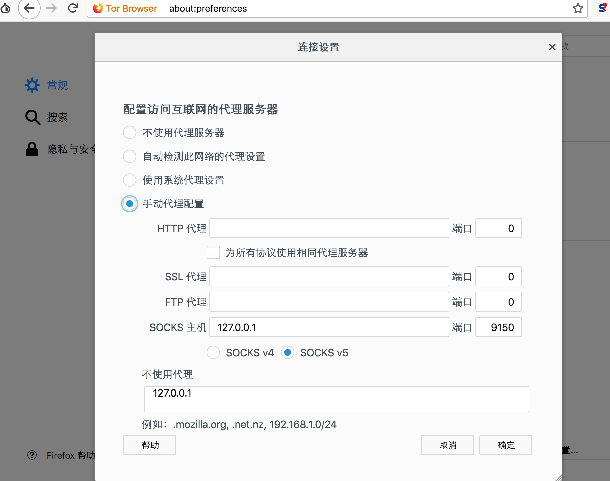
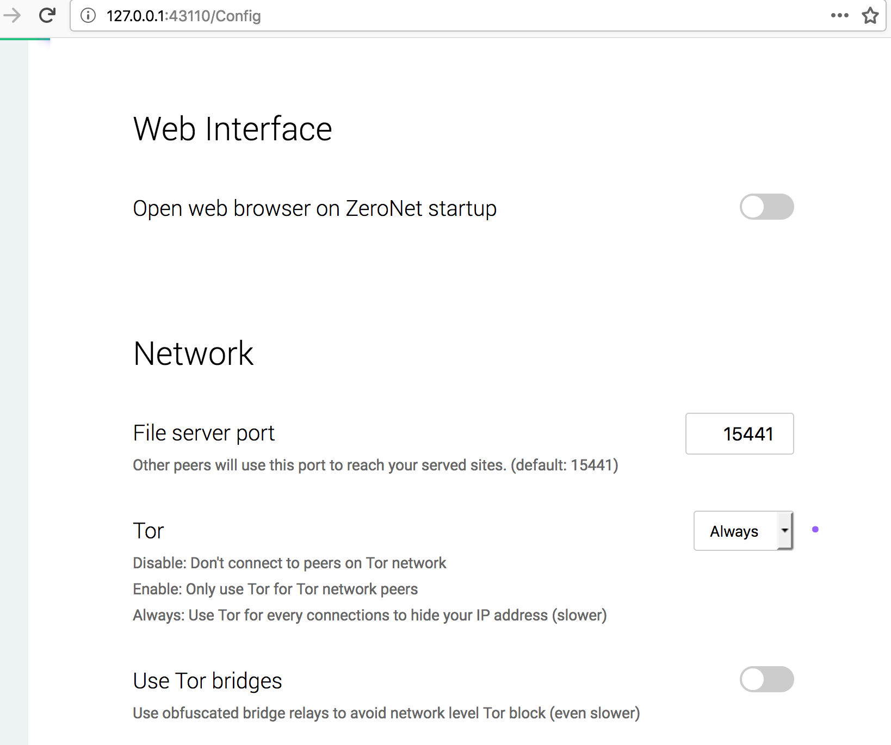

Use ZeroNet With Tor
ZeroNet本身并不是匿名网络。但他可以与Tor Browser结合，实现匿名网络的功能。
安装
ZeroNet和Tor Browser，详细教程可以参见官网。打开洋葱浏览器（Tor borwser）
- 打开网址 about:preferences
- 点击 网络代理 - 设置
- 输入 127.0.0.1 并把这个地址加入到 不通过代理访问

编辑
Tor的配置文件torrc，添加一行，然后重启Tor服务1
ControlPort 9051
运行
ZeroNet并打开http://127.0.0.1:43110/Config，设置 Network - Tor - Always
找到
ZeroNet的配置文件zeronet.conf，增加 2 行 Tor 代理配置，保存并重启ZeroNet服务
1 | [global] |
- 用
Tor Browser访问http://127.0.0.1:43110就可以啦。